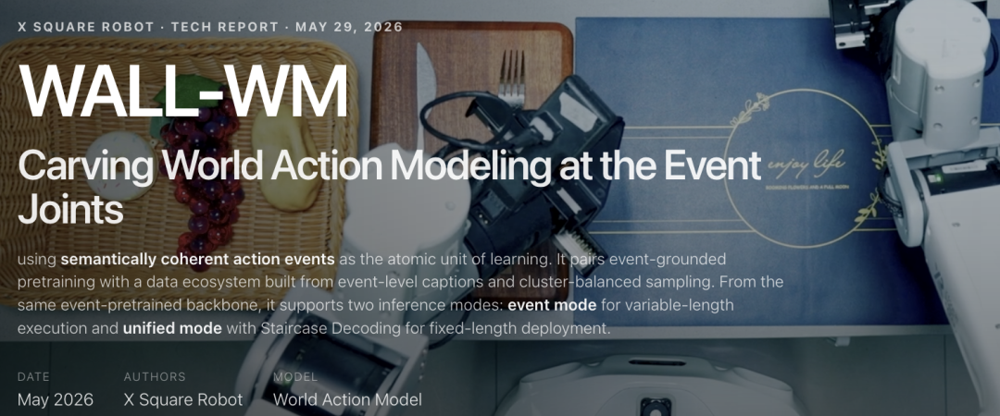
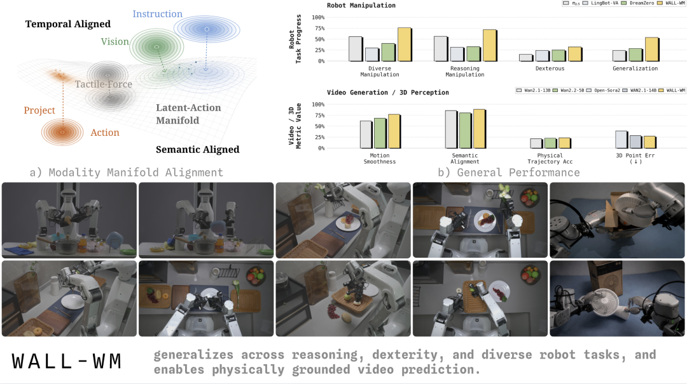
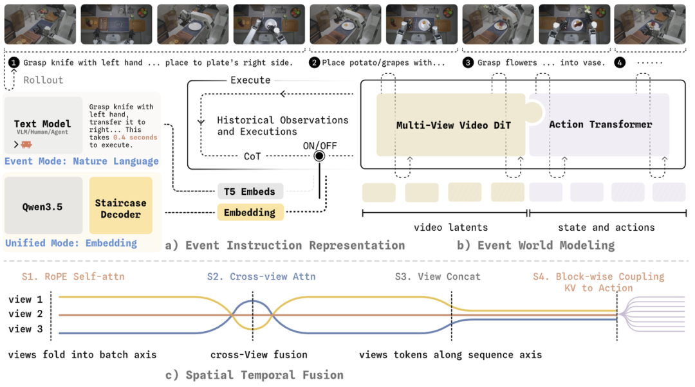
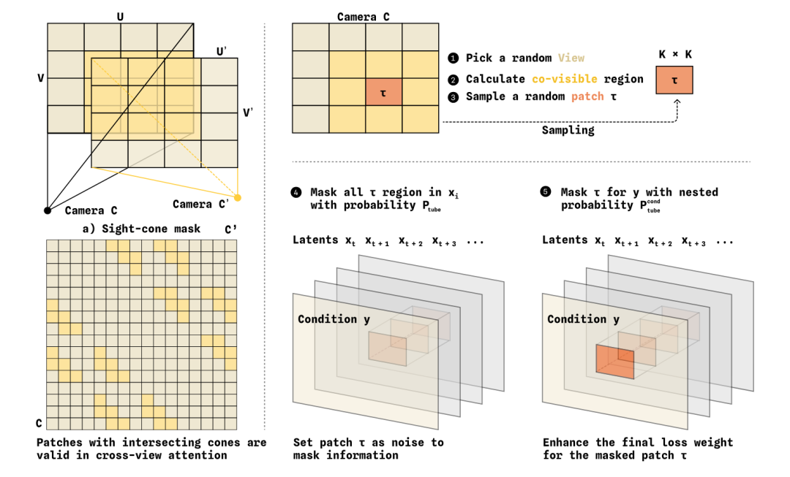
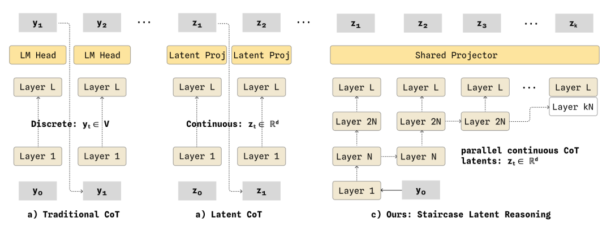
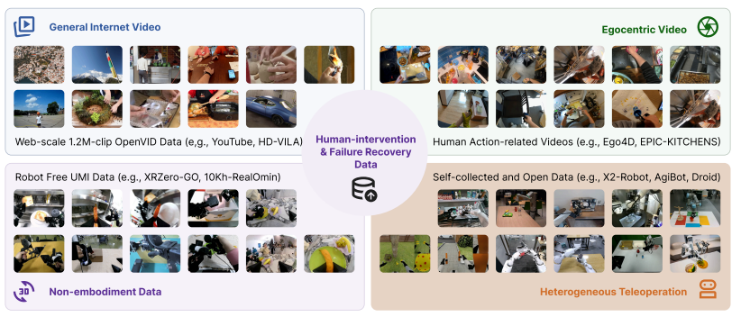
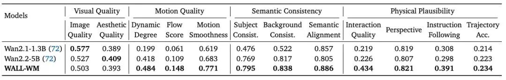
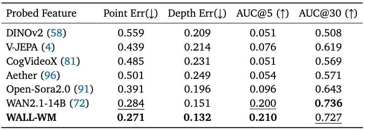
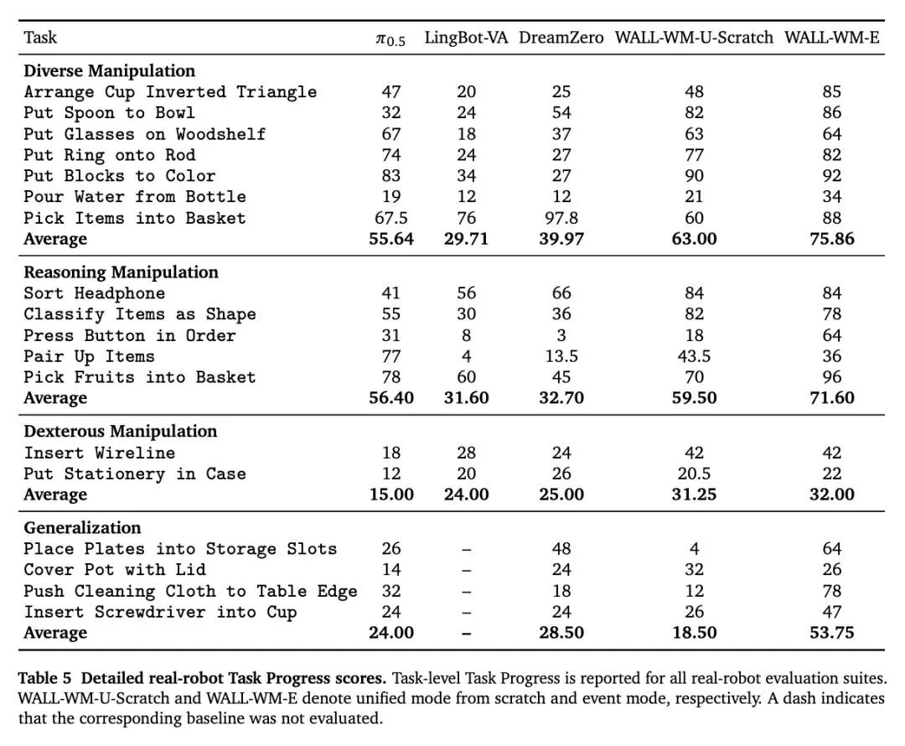
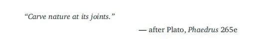

梦瑶 发自 凹非寺
量子位 | 公众号 QbitAI
让机器人把杯子递过去——
这个看似简单的任务，对当前的具身大模型来说，却是一场逐帧填空的考试：
预测0.1秒后手在哪、0.2秒后手在哪……
把一个完整动作切成几十张几乎雷同的画面，让模型一帧一帧去学。
结果，模型记住的是「手指每帧挪几毫米」，而不是「把杯子抓住」这个目标，换个杯子、换张桌子，节奏稍变，立刻翻车！！
刚刚，自变量机器人团队带来全新解法——
发布全球首个「事件级预测」具身智能世界模型WALL-WM。

WALL-WM把世界模型的预测单位从时间帧换成了语义事件：
模型不再问0.1秒后是什么样，而是直接想象抓住杯子那一刻是什么样，跳过中间所有冗余帧，并基于这个想象同步生成抵达它的动作。
由于「事件」本身就是跨场景、跨物体的通用语义抽象，WALL-WM在跨场景泛化上也展现出明显更稳的表现。
目前，这一模型已在论文《WALL-WM: Carving World Action Modeling at the Event Joints》中发布。
诶，这下好了。
以后小机器人们干活儿，也能更像人类一样抓重点，灵活应对物理世界的各种抓马情况了！
从按帧学动作，到按「事件」理解世界
这几年，主流VLA模型基本都在沿着一条路往前走：
给模型一帧当前画面，再加一句语言指令，让它预测接下来一段「固定长度」的动作块。
这个做法当然很工程化，也确实方便训练，但问题在于真实世界的机器人动作，并不会乖乖按照固定时间窗口发生。
比如让机器人抓起一个杯子，它里面至少包含接近、接触、闭合夹爪、提起、移动、放下几个阶段。
每个阶段的物理状态都不一样，接触前和接触后更是完全不同的控制问题。
针对这个bug，自变量机器人在论文中提出了一个非常「反常识」的行业判断——
文本、视觉、动作这三类信息，其实是天然没办法「完全对齐」的……（doge）

论文中提到，文本、视觉、动作在高维空间里有不同的「流形几何」，也有完全不同的「时间尺度」。
文本是高层、低熵的语义意图；视觉是连续演化的高维观察；动作则被物理世界强约束，对接触状态、时间精度和微小扰动都极其敏感。
如果直接把三者压进同一个共享空间，预训练表示很容易偏离原本的先验几何！！
所以说，这也是为啥目前行业内很多VLA在真机上视觉-语言-动作对齐的表现，远不如其底座VLM应有的⽔平…..
既然传统VLA问题这么多，自变量团队也重新追问了一个更为根本的问题：机器人到底该按什么单位学会一个动作？
基于这个思路，团队出了WALL-WM世界模型，让机器人按event-centric的方式去训练和执行。
所谓的event-centric，简单说就是把机器人任务切在真正有语义、有物理动作变化的「事件边界」上，然后在这些事件数据上进行模型训练。
比如伸手、抓取、抬升、移位、放置，都可以看成一个个围绕动作展开的语义事件。
它能被语言说清楚，也能被视频完整记录，还能落到机器人的动作轨迹上，这样就可以把语言、画面和动作真正串了起来～
WALL-WM泛化能力更强的关键也就在这里：让机器人围绕事件理解世界变化，再把这种理解转成可执行动作。
而这，才是具身智能「世界模型」应有的形态。
WALL-WM的核心链路：先预演，再执行
具体来说，WALL-WM做的不是直接从画面生成动作。
而是先让模型理解「下一个事件会让世界怎么变」，再把这种变化翻译成机器人该执行的轨迹。
背后是一整套从感知到控制的路径重构，自变量团队将其拆成了三层：

第一层，是事件指令入口。
其作用很直接，就是告诉模型「下一步要做什么」，比如抓起杯子、放进篮子、把积木摆到指定位置。
第二层，是事件世界模型。
模型会围绕这个事件，去预演接下来画面里的变化：物体会怎么动，场景会怎么变，机械臂又该如何参与其中。
第三层，是多视角时空融合。
机器人看到的往往不止一个角度，头部相机、腕部相机提供的是不同位置的信息。WALL-WM会把这些视角统一起来，让模型在执行动作之前，先把现场看得更完整。
不仅如此，在这个架构中WALL-WM还用几组关键设计，把这条链路变成了一个尽量保住视频先验、又能长出动作能力的系统。
同⼀个基座，两种推理模式
在执行阶段，WALL-WM不会只生成一段死板的固定动作，而是让同一套模型权重可以跑出两种推理模式。
首先就是事件模式（Event Mode）。
当上层规划器已经把任务拆好，模型就可以直接根据这个事件描述，输出一段长度可变的动作，这个模式更贴近WALL-WM的核心思想：动作不必被硬切成固定窗口，而是顺着语义事件自然展开。
另一种是统一模式（Unified mode）。
当没有外部规划器，机器人需要自己一边看、一边想、一边控制时，VLM会结合当前视觉输入和任务指令，在线生成中间推理，再把结果交给动作模型输出「固定长度」的动作块。
这个模式更适合实时闭环控制，因为它能保持稳定的控制频率。
这两种推理模式的关键在于，其共享同一套权重，执行过程中还能按动作块切换，不需要为了不同场景重新训练模型，所以模型的用法也更灵活。
它既能接在更大的机器人系统后面，专门负责把规划好的事件稳定执行出来，也能自己完成从看懂任务、判断下一步，到生成动作的完整流程。
视频模型和动作模型分工生长
不仅如此，WALL-WM没有直接把视频模型改成动作模型，而是把两条能力「拆开」来长——
让机器人先预演世界会怎么变，再决定自己该怎么动。
具体来说，视频模型会承载互联网视频训练出来的动态先验，负责理解物体怎么动、场景怎么变。
而动作模型从零初始化，专门学习如何把这些视觉变化翻译成机器人轨迹。
两者在每一层做单向耦合：动作流读取视频流的视觉证据，视频流保留原本的动态先验，避免被动作数据过早「带偏」。
这样一来，模型既能守住视频基座已有的世界理解能力，又能让动作能力在大规模训练中持续增长。
而这，正是绝⼤多数VLA在⼤规模训练时做不到的～
几何感知的多视角融合
大家都知道，现实生活中大多机器人通常不止一个摄像头：一般是顶视看全局，腕部相机看手边细节。
但事实上多视角并不会天然对齐，简单做跨视角注意力，模型很容易把它学成特征混合，看起来相关就连在一起，却未必符合真实空间关系，于是WALL-WM用了两个机制来解决——
一个是视锥掩码。
它会根据相机标定信息，判断两个图像块在三维空间里有没有可能看到同一片区域，物理上对不上的关联，直接从注意力路径里切掉，这样一来，模型跨视角看过去的地方，至少先符合真实世界的几何关系。
另一个是管状掩码。
它会随机遮掉某个视角里一段连续的时空区域，让模型不能只靠单一视角内部的时间信息补答案，只能从其他相机里找线索。

一个限制错误连接，一个制造跨视角需求，配合免标定、此外可学习的相机旋转位置编码，天然⽀持多本体多视角⼤规模混合训练。
这样一来，跨视角注意力就从可有可无的能力，变成训练中反复使用的几何对应能力。
阶梯式思维链解码
在真实物理场景中，机器人做复杂任务时，往往需要「想一想」具体怎么做。
CoT能提升这类决策质量，但传统逐token生成太慢，对聊天模型来说慢一点还能接受；对机器人来说动作控制可等不起…
针对这个问题，WALL-WM给出的解法是：用Staircase Layer-Relay CoT Decoding（阶梯式思维链解码），保留、可读的思维链，同时改造解码方式。
把原本一层层、一个token接一个token的串行过程，拆成「低层只跑一次，高层阶梯式展开」。

具体来说，底层负责抽取共用的推理状态，只做一次；后面的多个思维token则在高层并行完成。
它生成的仍是连续CoT latent，但这些latent可以通过冻结LLM还原为文本推理轨迹，因此保留了一定可解释性，同时减少逐token解码带来的延迟。
这样一来，可解释性与实时性，第⼀次不⽤⼆选⼀。
事件级世界模型背后，是一次从数据到部署的系统级重构
WALL-WM真正想解决的，远不止模型结构的事件级改造。
背后真正撑起这套能力的，还有一套从数据采集、层级标注到采样训练的一整套「系统工程」。
在数据结构上，WALL-WM没有只依赖机器人真机数据，而是搭了一个数据金字塔。
底层是百万级网络通用视频，用来补足开放世界里的视觉和运动先验；再往上，是人类动作视频、第一视角视频、公开机器人数据、自采视频-动作数据。
而最顶端，才是真机接管、纠错和恢复数据。
每⼀层都是对上⼀层某条约束的可控放松，越往上越贴近真机部署， 越往下越接近开放世界的视觉先验。

不仅如此，为了让事件真正进入训练，WALL-WM没有把一条机器人轨迹当成一整段视频粗暴喂给模型。
而是采用了四级层级化标注+双聚类采样的方式，把每条轨迹拆成任务、子任务、动作、片段四层，这样模型看到的就不再是混在一起的长序列，而是一个个边界更清楚的行为单元。
论文里还有一个很值得注意的发现，那就是当文本描述按照动作边界被切分后，语言分布和视觉-语言联合分布都变得更均衡了。
这也意味着，原本容易被淹没在长任务里的稀有指令、特殊场景组合，会更自然地在训练阶段暴露给模型。
这样的方式不仅帮助模型理解动作边界，也顺手改善了数据分布，让长尾样本更容易被训练到～
除了模型和数据，WALL-WM还专门补了一块底层训练系统。
目前事件级建模要同时处理视频、动作、多视角和长序列，训练成本非常高，如果系统撑不住，方法再好也很难真正放大！
而自变量团队给出的解法是，采用分布式「Muon」来提升收敛和稳定性（DMuon），并用多事件打包，把多个事件塞进同一条长序列里训练，降低单条样本带来的计算浪费。
到了部署阶段，再通过蒸馏减少去噪步数，用FP8量化降低显存和推理成本，让这套大模型更接近机器人实时控制所需的延迟，让模型更适合实时控制。
实验结果
在具体实验环节，WALL-WM的价值则一步体现在大规模「真机泛化能力」上。
其不仅能执行固定模板任务，还能支持不同粒度的event-centric文本输入，不仅如此，在新指令、新物体、新场景和新任务、新本体里继续完成动作推理与执行。
Embodied Video Generation：相比Wan2.1/Wan2.2，WALL-WM在Motion Quality、Semantic Consistency、Physical Plausibility三个具身相关维度全面领先：

3D Awareness（CO3Dv2）：在Point Error与Depth Error上优于WAN2.1-14B、Open-Sora 2.0、V-JEPA、DINOv2：

真机Core15 L1基准：基础任务、推理任务、灵巧操作、泛化场景下取得的任务完成分数，均显著超过π0.5、DreamZero，在抽象指令设定下是当前完成度最高的L1模型之一：

论文开头，自变量机器人团队引用了柏拉图《斐德罗篇》中的一句话——
依乎天理，因其固然。

放到整个具身智能行业里来看，这句话很值得深思，也恰恰点出了WALL-WM的核心——
物理世界的真实任务，从来不会按照固定时间窗口整齐发生，它更像一串自然衔接的事件，伸手、接触、抓取、移动、放下，每一个关键变化，都对应着动作里的自然关节。
而WALL-WM做的，就是让模型沿着这些「事件关节」去理解世界、预测变化、生成动作。
而这，也给机器人的泛化能力找到了一个更自然的支点：
当语言变了、物体变了、场景变了、任务组合变了甚至本体变了，机器人依然可以顺着事件边界判断，现在进行到哪一步，下一步世界会怎么变，动作又该如何落下去。
目前，具身智能行业的竞争正在从跑分和Demo演示走向真实部署，行业比拼也会从谁看起来更会动，走向「谁更能理解变化、组织行动、稳定泛化」。
而自变量机器人这一次，已经用一套自洽的工程化范式，提前把这条路的领先成果摆了出来。
参考链接：
[1]GitHub：https://github.com/X-Square-Robot/wall-x
[2]项⽬主⻚：https://x2robot.com/pages/wm
一键三连「点赞」「转发」「小心心」
欢迎在评论区留下你的想法！
— 完 —
🌟 点亮星标 🌟